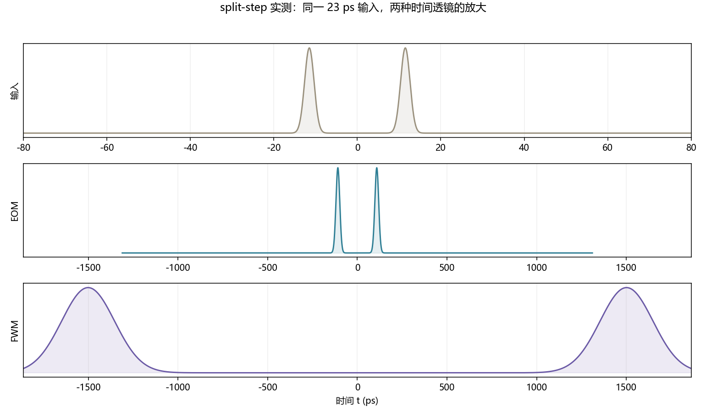
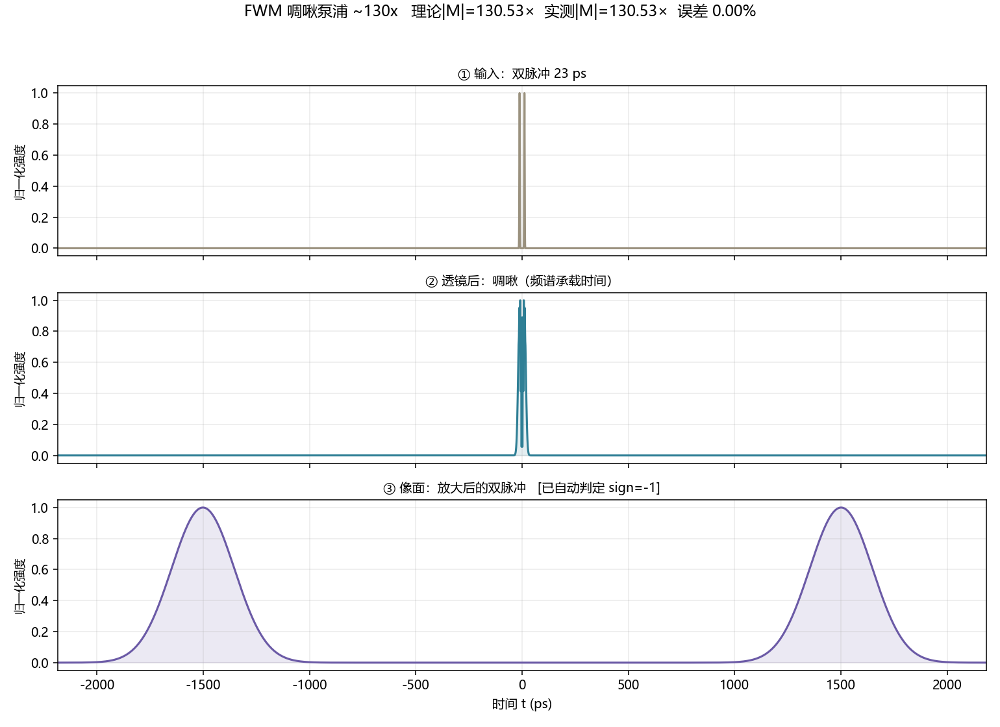

EOM 方案受正弦抛物线近似限制，二次相移有限。把透镜换成四波混频（FWM）： 让一段线性啁啾的强泵浦与信号在同一根高非线性光纤里混频，转换出的闲频光自动带上二次时间相位。 相移更大、带宽可达 THz；代价是要高峰值功率泵浦和相位匹配。 本页参数来自公开论文，130× 与 9.6× 两态均已用 split-step 数值仿真验证（见第五节）。
第③行是光纤版写法：输入色散来自 SMF、输出来自 DCF，两者 β₂ 反号故 M 为正（无时间反演）。
MDPI 实测 M = 8.46、分辨率 7.38 ps（16 GHz 示波器）；
美国专利 US-12130176-B2 用 30 m HNLF + 双泵浦做到 ~130×，孔径 165 ps。
已核对论文/专利
α 默认 16.79×10²¹ rad/s²：由成像焦距反解 φ″ₗ=1/(4α)=14.9 ps²，与泵浦 GDD 实测 −15.12 ps² 相符（差 1.5%）。
γL=24 W⁻¹km⁻¹ × 0.03 km = 0.72；专利要求两泵浦 (P₁+P₂)γL=π。
输入 SMF 色散（把时间变成啁啾）→ 啁啾泵浦 + 信号在 HNLF 里 FWM（闲频光带上 2αt² 二次相位）→ DCF 输出色散（成像）。蓝线是频率分量，紫线是泵浦啁啾。
| 模块 | 器件 / 参数 | 论文/专利实际值 | 作用 |
|---|---|---|---|
| 光源 | 锁模掺铒光纤激光器 MLFL | 100 MHz 重频 | 信号与泵浦同源，天然锁相 |
| 啁啾泵浦 | 脉冲经 SMF 展宽 + 带通滤波 + EDFA | 680 m SMF，GDD=−15.12 ps²，1540 nm/14 nm，165 ps | 提供线性啁啾 ω(t)=αt |
| 准 CW 泵浦 | 可调谐激光 TLS + 幅度调制 | 1558 nm，360 ps 脉冲 | BS-FWM 第二泵浦，提效率 |
| 非线性介质 | 高非线性光纤 HNLF | 30 m，γ=24 W⁻¹km⁻¹，ZDW=1395 nm | χ⁽³⁾ 混频，产生二次相位 |
| 输入色散 | DCF 模块 | 200 m，+15 ps² | 输入啁啾展开 |
| 输出色散 | 2× DCF 模块 | +1958 ps² | 把放大像投到像面 |
| 探测 | 近红外 SPAD + TCSPC | 时间分辨率受放大率提升 | 单光子级、突破 jitter 极限 |
出处：MDPI Photonics 2024（M=8.46，7.38 ps）、 US-12130176-B2（130×，30 m HNLF）、 Optica 2022（BS-FWM 单光子时间透镜，>1 THz 带宽）。
时间透镜_splitstep仿真.py）

老师问"是否有关系、公式是否有价值"。我把每一条摊开，按 A5 铁律标确信度—— 原文没有的，绝不说成原文有。
| 对照项 | NewBerlin 原文 | 本工程页 | 判定 |
|---|---|---|---|
| 成像方程 | 无。墙上玻璃板"能看到彩色电影"，作者自述"不知道怎么运作"，无曲率、材料、焦距、成像公式 | 有。φ″ₗ、成像条件、M 三式，可复算可仿真 | 无关 原文不可施工 |
| 几何基础 | 正定欧氏勾股 V₁²+…+V₅²=K²，原文明确"in contrast to Einstein" | 时空对偶 PDE（抛物型），非双曲速度空间 | 不同 我此前用双曲 τ 平面类比是过度关联，已修正 |
| 时间 = 长度 | 有。tobject ∝ 第 4 方向电场弦长（假设 3，原文 line 130） | 时间透镜把时间轴当空间轴成像（时空对偶） | 哲学同构 同一直觉，无公式传承 |
| 慢化因子 √(1−β²) | 有。Time-Delay 节：t = t₀√(1−(V₃/C)²)（line 186） | 与相对论 γ⁻¹ 同式；工程台不直接使用 | 同源 都是洛伦兹因子（NewBerlin 自述源自 Lorenz） |
| 放大/衰减 | 10×/100×/1000× 为设定值，无机制、无方程 | |M|=φ″ₒ/φ″ᵢ，可算可测（9.4×/130×） | 无关 数值巧合，不可互推 |
| FWM / χ⁽³⁾ | 原文无四波混频、无非线性光学 | 核心机制就是 χ⁽³⁾ | 无关 |
① 工程台的公式：有独立价值。 φ″ₗ=1/(4α)、成像条件、M=φ″ₒ/φ″ᵢ 来自可复现实验，经本页 split-step 验证（误差 0.00%）。 价值不依赖 NewBerlin 对错——就算那本 PDF 全是错的，这套图纸照样能造出器件。
② NewBerlin 的 √(1−β²) 与"时间=弦长"：有启发价值，不是工程公式。 它给出"时间可以被当作一段可测量长度"的直觉，这正是时间透镜能工作的哲学前提； 但它没有成像方程，不能算焦距、不能算放大率，不能直接指导施工。
③ 我此前桥接页里的 η=artanhβ、|q|=e⁻η、τ 上半平面 ≅ 双曲速度空间：是我用标准数学搭的桥， 原文没有，且原文的几何是正定勾股、明确与爱因斯坦相反。 这套桥作为"另一套自洽的语言"有价值，但不能说成 NewBerlin 的底层数学——这一点今天据原文改正。
时间透镜_splitstep仿真.py），在目标放大率下确认成像残差 <1%。130× 已跑通。(P₁+P₂)γL=π 时转换效率峰值。参数来自论文/专利 · 仿真脚本可复核 · 与 NewBerlin 的关联按原文逐条标级 · 2026-11-16